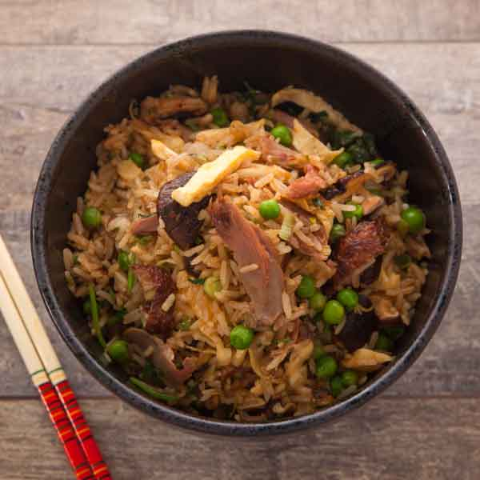

Duck Fried Rice
This recipe will allow you to make the most of either leftovers or
freshly prepared duck and rice. It is quick and easy and will
leave your mouth watering after minimal effort
with its flavor and richness!
Ingredients
- Duck: One Pound cooked and shredded
- Sliced mushrooms: One cup
- Coconut Aminos: half cup or enough
to flavor without soaking
- Rice: One cup, already cooked
Instructions
- Begin sauteeing mushrooms
with a bit of garlic and salt
- Mix in rice and duck and aminos, allow all to get
hot and carmelized
- Stir and wait until there is slight char and carmelization
within the bulk of food.